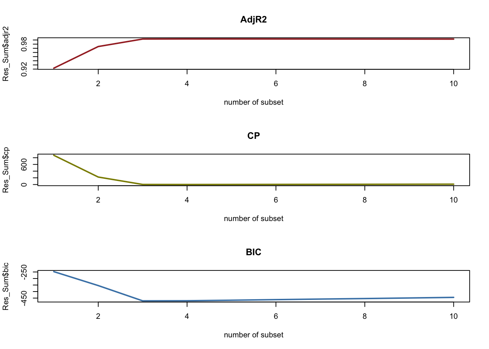
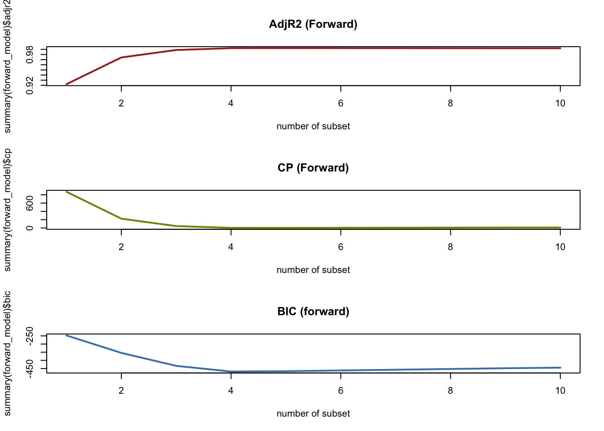
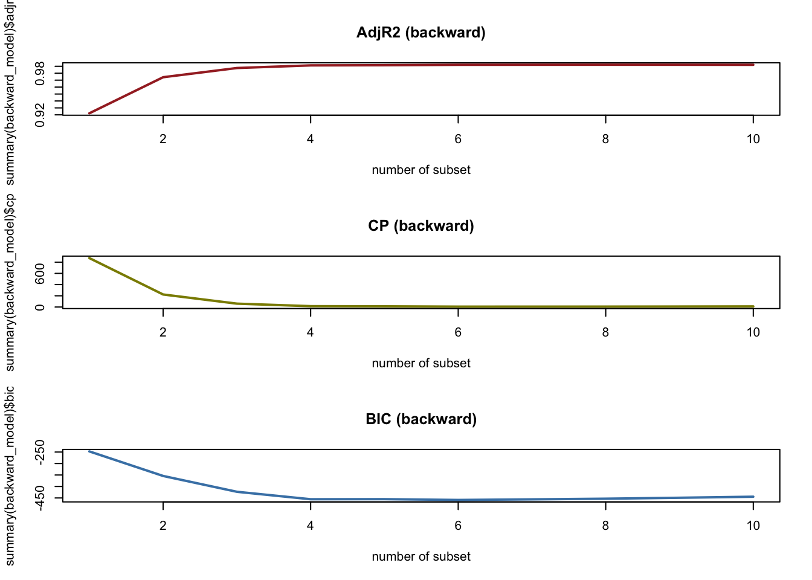

#install.packages("leaps")
require(leaps)Loading required package: leapsSusmi Sharma
In this assignment, we created best subset selection model, and compared how the result changes with forward stepwise and backward stepwise.
Generate simulated data, and then use this data to perform best subset selection. 1. Use the rnorm() function to generate a predictor X of length n = 100, as well as a noise vector 𝜀 of length n = 100.
data1 <- data.frame(y, x)
Model <- regsubsets(y ~ poly(x, 10, raw = T), data = data1, nvmax=10)
names(Model) [1] "np" "nrbar" "d" "rbar" "thetab" "first"
[7] "last" "vorder" "tol" "rss" "bound" "nvmax"
[13] "ress" "ir" "nbest" "lopt" "il" "ier"
[19] "xnames" "method" "force.in" "force.out" "sserr" "intercept"
[25] "lindep" "nullrss" "nn" "call" ### Look at the CP R2 and BIC to find the best subset
Res_Sum <- summary(Model)
Best_model_wrt <- data.frame(
Adj.R2 = which.max(Res_Sum$adjr2),
CP = which.min(Res_Sum$cp),
BIC = which.min(Res_Sum$bic))
Best_model_wrt Adj.R2 CP BIC
1 4 4 3## Plot R2, CP, and BIC as a function of number of subset
par(mfrow = c(3, 1))
plot(Res_Sum$adjr2, type = "l", xlab = "number of subset", col = "brown",
main = "AdjR2", lwd = 2)
plot(Res_Sum$cp, type = "l", xlab = "number of subset", col = "yellow4",
main = "CP", lwd = 2)
plot(Res_Sum$bic, type = "l", xlab = "number of subset", col = "steelblue",
main = "BIC", lwd = 2)
NULL## forward stepwise model
forward_model <- regsubsets(y ~ poly(x, 10, raw = T), data = data1, nvmax= 10,
method = "forward")
summary(forward_model)Subset selection object
Call: regsubsets.formula(y ~ poly(x, 10, raw = T), data = data1, nvmax = 10,
method = "forward")
10 Variables (and intercept)
Forced in Forced out
poly(x, 10, raw = T)1 FALSE FALSE
poly(x, 10, raw = T)2 FALSE FALSE
poly(x, 10, raw = T)3 FALSE FALSE
poly(x, 10, raw = T)4 FALSE FALSE
poly(x, 10, raw = T)5 FALSE FALSE
poly(x, 10, raw = T)6 FALSE FALSE
poly(x, 10, raw = T)7 FALSE FALSE
poly(x, 10, raw = T)8 FALSE FALSE
poly(x, 10, raw = T)9 FALSE FALSE
poly(x, 10, raw = T)10 FALSE FALSE
1 subsets of each size up to 10
Selection Algorithm: forward
poly(x, 10, raw = T)1 poly(x, 10, raw = T)2 poly(x, 10, raw = T)3
1 ( 1 ) "*" " " " "
2 ( 1 ) "*" " " " "
3 ( 1 ) "*" " " "*"
4 ( 1 ) "*" "*" "*"
5 ( 1 ) "*" "*" "*"
6 ( 1 ) "*" "*" "*"
7 ( 1 ) "*" "*" "*"
8 ( 1 ) "*" "*" "*"
9 ( 1 ) "*" "*" "*"
10 ( 1 ) "*" "*" "*"
poly(x, 10, raw = T)4 poly(x, 10, raw = T)5 poly(x, 10, raw = T)6
1 ( 1 ) " " " " " "
2 ( 1 ) "*" " " " "
3 ( 1 ) "*" " " " "
4 ( 1 ) "*" " " " "
5 ( 1 ) "*" "*" " "
6 ( 1 ) "*" "*" " "
7 ( 1 ) "*" "*" "*"
8 ( 1 ) "*" "*" "*"
9 ( 1 ) "*" "*" "*"
10 ( 1 ) "*" "*" "*"
poly(x, 10, raw = T)7 poly(x, 10, raw = T)8 poly(x, 10, raw = T)9
1 ( 1 ) " " " " " "
2 ( 1 ) " " " " " "
3 ( 1 ) " " " " " "
4 ( 1 ) " " " " " "
5 ( 1 ) " " " " " "
6 ( 1 ) " " " " "*"
7 ( 1 ) " " " " "*"
8 ( 1 ) "*" " " "*"
9 ( 1 ) "*" "*" "*"
10 ( 1 ) "*" "*" "*"
poly(x, 10, raw = T)10
1 ( 1 ) " "
2 ( 1 ) " "
3 ( 1 ) " "
4 ( 1 ) " "
5 ( 1 ) " "
6 ( 1 ) " "
7 ( 1 ) " "
8 ( 1 ) " "
9 ( 1 ) " "
10 ( 1 ) "*" Best_model_forward <- data.frame(
Adj.R2 = which.max(summary(forward_model)$adjr2),
CP = which.min(summary(forward_model)$cp),
BIC = which.min(summary(forward_model)$bic))
Best_model_forward Adj.R2 CP BIC
1 5 5 4par(mfrow = c(3, 1))
plot(summary(forward_model)$adjr2, type = "l", xlab = "number of subset", col = "brown",
main = "AdjR2 (Forward)", lwd = 2)
plot(summary(forward_model)$cp, type = "l", xlab = "number of subset", col = "yellow4",
main = "CP (Forward)", lwd = 2)
plot(summary(forward_model)$bic, type = "l", xlab = "number of subset", col = "steelblue",
main = "BIC (forward)", lwd = 2)
(Intercept) poly(x, 10, raw = T)1 poly(x, 10, raw = T)2
4.15670295 9.03082564 1.59010182
poly(x, 10, raw = T)3 poly(x, 10, raw = T)4
0.99086710 0.06978542 ## We need to get the backward stepwise model
backward_model <- regsubsets(y ~ poly(x, 10, raw = T), data = data1, nvmax=10,
method = "backward")
summary(backward_model)Subset selection object
Call: regsubsets.formula(y ~ poly(x, 10, raw = T), data = data1, nvmax = 10,
method = "backward")
10 Variables (and intercept)
Forced in Forced out
poly(x, 10, raw = T)1 FALSE FALSE
poly(x, 10, raw = T)2 FALSE FALSE
poly(x, 10, raw = T)3 FALSE FALSE
poly(x, 10, raw = T)4 FALSE FALSE
poly(x, 10, raw = T)5 FALSE FALSE
poly(x, 10, raw = T)6 FALSE FALSE
poly(x, 10, raw = T)7 FALSE FALSE
poly(x, 10, raw = T)8 FALSE FALSE
poly(x, 10, raw = T)9 FALSE FALSE
poly(x, 10, raw = T)10 FALSE FALSE
1 subsets of each size up to 10
Selection Algorithm: backward
poly(x, 10, raw = T)1 poly(x, 10, raw = T)2 poly(x, 10, raw = T)3
1 ( 1 ) "*" " " " "
2 ( 1 ) "*" " " " "
3 ( 1 ) "*" " " " "
4 ( 1 ) "*" " " " "
5 ( 1 ) "*" " " " "
6 ( 1 ) "*" " " " "
7 ( 1 ) "*" " " " "
8 ( 1 ) "*" " " " "
9 ( 1 ) "*" "*" " "
10 ( 1 ) "*" "*" "*"
poly(x, 10, raw = T)4 poly(x, 10, raw = T)5 poly(x, 10, raw = T)6
1 ( 1 ) " " " " " "
2 ( 1 ) "*" " " " "
3 ( 1 ) "*" "*" " "
4 ( 1 ) "*" "*" "*"
5 ( 1 ) "*" "*" "*"
6 ( 1 ) "*" "*" "*"
7 ( 1 ) "*" "*" "*"
8 ( 1 ) "*" "*" "*"
9 ( 1 ) "*" "*" "*"
10 ( 1 ) "*" "*" "*"
poly(x, 10, raw = T)7 poly(x, 10, raw = T)8 poly(x, 10, raw = T)9
1 ( 1 ) " " " " " "
2 ( 1 ) " " " " " "
3 ( 1 ) " " " " " "
4 ( 1 ) " " " " " "
5 ( 1 ) " " "*" " "
6 ( 1 ) " " "*" " "
7 ( 1 ) "*" "*" " "
8 ( 1 ) "*" "*" "*"
9 ( 1 ) "*" "*" "*"
10 ( 1 ) "*" "*" "*"
poly(x, 10, raw = T)10
1 ( 1 ) " "
2 ( 1 ) " "
3 ( 1 ) " "
4 ( 1 ) " "
5 ( 1 ) " "
6 ( 1 ) "*"
7 ( 1 ) "*"
8 ( 1 ) "*"
9 ( 1 ) "*"
10 ( 1 ) "*" Best_model_backward <- data.frame(
Adj.R2 = which.max(summary(backward_model)$adjr2),
CP = which.min(summary(backward_model)$cp),
BIC = which.min(summary(backward_model)$bic))
Best_model_backward Adj.R2 CP BIC
1 8 6 6par(mfrow = c(3, 1))
plot(summary(backward_model)$adjr2, type = "l", xlab = "number of subset", col = "brown",
main = "AdjR2 (backward)", lwd = 2)
plot(summary(backward_model)$cp, type = "l", xlab = "number of subset", col = "yellow4",
main = "CP (backward)", lwd = 2)
plot(summary(backward_model)$bic, type = "l", xlab = "number of subset", col = "steelblue",
main = "BIC (backward)", lwd = 2)
(Intercept) poly(x, 10, raw = T)1 poly(x, 10, raw = T)4
4.2675220 9.8935377 3.0637033
poly(x, 10, raw = T)5 poly(x, 10, raw = T)6 poly(x, 10, raw = T)8
0.1839651 -1.7886013 0.4132643
poly(x, 10, raw = T)10
-0.0324920 When utilizing the best subset model, the optimal model appeared to consist of either 3 or 4 subsets. This trend was mirrored in the forward stepwise selection model. However, our backward stepwise selection indicated that our most effective model comprises 6 to 8 features.